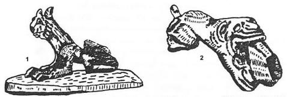

Öyle anlaşılıyor ki Kırgız'lar, Oyrat'lardan korkuyorlardı. Çünkü Oyrat reisi Kara-Han'ın oğlu Alman-Bet'in doğuşu, adeta olağan üstü bir korku ile anlatılıyordu. Yine bu destanda, Kırgızların Orta-Yüz'ünün reisi Kökçö (Kökçe)-Han’da Alman-Bet'i Isığ-Göl kenarında görünce, içinden ürpermeler geliyor ve korkuyordu. Ayrıca Alman-Bet doğunca, Müslümanların hepsi korkup, dağlara vadilere kaçıp oralarda saklanıyorlardı. Anlaşıldığına göre Kırgız'lar, bu sırada başlıca üç bölüme ayrılıyorlardı.
1. Orta-yüz: Bu bölümün reisi Kökçö (Kökçe)-Han idi. 2. Sağ- yüz: Bu bölümün başkanı da Manas idi. Manas'ın adı bu destanda, bazen Er-Manas, bazen Manas-Han, bazan da "Alp-doğan" Manas-Han şeklinde geçer. Tanrı ve Tanrı'nın melekleri daima Manas'a yardım ederler. Fakat Orta-yüz ‘ün başkanı, Kökçe'ye, melekler pek yüz vermez ve etrafında dolaşmazlar. Bu inanış da, Kükçe'nin Manas'la arasının iyi olmaması veya aralarında rekabet bulunması da rol oynamış olmalıdır. Manas’ın ünvanı da Sarı-Nogay'dır. Unvanının başında "Sarı" sıfatının bulunması, Sağ-yüz'ün veya Manas'ın şahsının, Sol-yüz'e nazaran daha asil ve soylu olduğunu gösterir. 3. Sol-yüz: Bu kolun başkanı da Kara-Nogay'dır. Nogay veya Nokay ünvanı, Altın- Ordu devletinden kalma bir ünvandır. Fakat kabilelerin "Sarı-Kara" diye ikiye ayrılmış olmaları ise, ta Türgeş devletinden kalma hatıralardır.
Yukarıda söylediğimiz gibi, Alman-Bet'in doğması ile korkan Müslüman Kırgızlar, yerlerini yurtlarını bırakır ve etrafa dağılırlar. Bunu bir fırsat bilen Oyrat'lar, onların bıraktıkları yurtları elde etmek için savaş hazırlıklarına koyulurlar. Oyratların ilk akını Sol-yüz reisi Kara- Nogay Yamgırçı (Yağmurcu) üzerine yapılır. Yağmurcu daha ziyade cada/yada taşı ile yağmur yağdıran sihirbazlara denirdi. Anlaşılıyor ki, bir meslek ifade eden bu deyim, sonradan bir kişi adı da olmuştu. Kara-Nogay üzerine yapılan akın duyulunca, hepsi birleşip, Oyratlara karşı savaşa geçerler ve Alman-Bet'in de yardımı ile Oyrat'ları yenerler.
Tabii olarak bu, Kırgızların Oyrat’lar hakkında zihinlerinde kurdukları bir hayâldir. Kırgız Bahşi'leri, kendilerinin tek başına Oyrat’larla başa çıkamayacaklarını biliyorlardı. Bu sebeple Kırgızların bu arzu ve istekleri, efsanelerde aksini bulmuştu.
Bu hikâyede, "Oğuz Destanı" ile ilgili en önemli motif, Kara-Han'ın oğlu Alman-Bet'in, babasını Müslüman olmağa davet etmesi ve Müslüman olmayınca da onu öldürmesidir. Oğuz, destanında da Oğuz’un öldürdüğü babasının adı Kara-Han idi. Tabiî olarak bu destanda, Oğuz destanında olduğu gibi, “Cihangirlik ruhu", dünyayı zapt etme ideali, v. s. gibi şeyler yoktur. Babasını öldürüp kaçmak, Alman-Bet için en büyük bir öğünme payıdır. Hâlbuki Oğuz destanında, hükümdarı öldürüp, onun ülkesini kendisine katmak, destanın değişmez ve en temel bir prensibidir. Oğuz-Destanındaki ideal, bir dünya imparatorluğu kurmaktır. Hâlbuki Alman-Bet'in vaat ettikleri, "Bacanı yağla, çatını yağla yapacağım, fakirleri giydirip, donatacağım"dan ileri gitmez. Ona göre zenginlik, servet ve refahın tek sembolü yağ'dır. Bununla beraber, "Fakirleri zengin etme" prensibi, Göktürk devletinden beri süre gelen ve hükümdara düşen bir vazife anlayışıdır.
Bilindiği üzere, Müslümanlığın en önemli işareti sakal bırakmak idi. Orta Asyalılar, saçları kestirmeyi de buna ilâve etmişlerdi. Hâlbuki eski Türklerin en önemli adetlerinden biri de, "Bıyık ve uzun saç'' bırakmak üzerine dayanıyordu. Sakalı tıraş etmek, yaygın bir adetti. Bu sebeple Kökçe-Han, Alman-Bet'e, her şeyden önce, saçını, bıyığını kesip, sakalını koyuvermesini tavsiye ediyordu. Diğer Kırgız efsanelerinde ise, Nogay-Han'ı Yoloy-Han’dan söz açılırken, bıyıklarının göğe değdiği söyleniyordu.
Şapka da, Müslüman olmayan Orta Asyalılarda önemli bir mal ve vazgeçilmez bir giyimdi. Bu sebeple, Alman-Bet'in akınlarından söz açılırken, "dağ gibi şapka ve kaftan" yığdığı söylenir. Şapkalarda, kuş tüylerinin bulunduğu da anlaşılıyor.
"Altı kol-ordu" deyimi de, burada üzerinde durulacak bir tabirdir. Türklerin kutsal "Yedi" ve "Dokuz" sayılarına karşılık, Oyrat'larda "Altı" ve "Altmış" sayıları önemli idi. Bunun kökleri de, tabiî olarak Çin'den gelen tesirlerde aranmalıdır. Bu sayıları, Kırgızlar da hazan kullanırlardı.
Eski Türklerde, yabancılar karşısında "Attan inme" âdeti de bazı kaidelere bağlı idi. Attan inmeden konuşmak, karşıdaki için bir saygı ifadesi değildi. İki kavim karşısında, tam bir dostluk ve anlayış kurulmadan da attan inilmezdi. Bu sebeple Göktürk'ler bazen Çin elçilerini zorla attan indirmiş ve öyle konuşmuşlardı. Yine bunun içindir ki, Alman-Bet, Kur’an’ı görmeden ve Müslümanlığı kabul etmeden, attan inip de Kökçe-Han'ın çayını içmemiştir.
"On iki ayda doğma", yani ana rahminde, normal zaman olan "Dokuz ay"dan fazla kalma da, Türk mitolojisinin önemli motiflerinden biridir. Büyük kahramanlar ve kutsal şahıslar hep annelerinin karnında dokuz aydan fazla kalırlardı. Bu da, onların ana rahminde diğer normal insanlara nazaran, olgunlaşma ve gelişme çağlarının daha fazla olduğunu gösteren bir inanış olsa gerekti.
"Kızıl-ince ruh" da, bir Şamanizm kalıntısıdır. Alman-Bet'in kendisi Müslüman olduğu halde, kızıl ve ince ruhunun cennete gitmesini arzu etmektedir. Bu da gösteriyor ki, Kırgızlar ne kadar Müslüman olsalar da, eski inanış ve deyimlerini bırakmamışlardı.
"Manas'ı koruyan ruhların ağzından girip, düşmana karşı nara salmaları" da İslamiyet’le uzlaşmayan bir inanıştır. Bu, eski Türklerin Kut dedikleri ve Tanrının bazı insanlara bahşettiği kutsal kudrettir. İslâmiyet de ise Allah, melekleri ile sıyanet eder ve korurdu. Bu koruma, dışardan ve Tanrı vasıtasıyla olurdu. Türkler de ise Tanrının kudreti, insan ruhunun yerini alıp ve o talihli insanı başarıya kavuştururdu.
"Diyet" ve "Ceza" anlayışları, anlaşılıyor ki tamamen İslamiyet’in tesirleri içine girmişti. Alman-Bet'in : "öldürdüğüm insana diyet vermeyeceğim, öldürdüğüm deveye ceza vermeyeceğim", sözlerinden bu anlaşılıyor.
Kökçe-Han'ın, Alman-Bet'e göz koyan gözdesinin adı, Ak-Erkeç'dir. Yani, "Beyaz-Teke" demektir. Bu adın, vefasızlıkla ilgisinin bulunup bulunmadığını da pek anlamıyoruz.
Kozmogoni, yani uzay ve dünya ile ilgili inanış ve anlayışlar, Türk mitolojisinin temelini teşkil ederler. Kökçe-Han'ın Ak-Kuyas ve Kök-Kuyas adlı iki yiğidi vardı. Bu adlarının manası "Ak-Güneş" ve "Gök-Güneş" anlamına gelir. Daha fazla derine inilmediği için, Han'ın da bir Tanrı yerine konup konmadığını pek anlayamıyoruz.
"Kırk-yiğit" motifi burada da geçmektedir. Tıpkı Dede Korkut hikâyelerinde olduğu gibi, onlar da Alman-Bet'i kıskanırlar ve Kökçe- Han'ın yanından onu uzaklaştırmak için, iftirada bulunurlar.
Yer, yer olanda!
Su, su olanda!
Altı-Ata'nın oğlu, kâfirler hep var iken,
Üç-Ata'lardan gelen, Müslümanlar var iken,
Kaftanı kıl yakalı, Oyrat'ın Büyük Han'ı,
Düğmeli ve kemerli, püsküllü Oyrat-Han'ı,
Tüylü, Büyük şapkalı, hotozları altından,
Dünyanın dört yanını, kendi elinde tutan,
Oyrat'lı Kara-Han'ın, bir oğlu olmuş idi,
Büyük toylar yapılmış, gönüller dolmuş idi.
Kara-Han'ın bu oğlu, doğunca sağ selâmet,
Ona ad vermişlerdi, "Kaplan-Doğan" Alman-Bet.
Sözüyle doğmuş idi, bütün enbiyaların,
Duasıyla olmuştu, bütün evliyaların.
Bütün kutsal yerlerin, takdisiyle doğmuştu,
Ardıçlı mezarların, Tanrısıyla doğmuştu.
Alman-Bet doğduğunda:
Kara dağlar korkudan, basılmış alçalmıştı,
Büyük sular korkudan, çay olmuş azalmıştı.
Ne kadar oğlu varsa, Üç-Müslüman Ata'nın,
Kaçmış sığınmışlardı, başına pınarların,
Kırgızların başları, Yamgırçı, Kara-Nogay,
"Talaş boyu arslanı", Er-Manas, Sarı-Nogay,
Kambar-Han'dı dedesi, Aydar-Han'dı babası,
Aylangıs oğlu Kökçö, Orta-Yüz'ün atası.
Bütün bu başkanların, hepsi de barıştılar,
Yeni bir akın için, durmadan danıştılar.
Dediler hep gidelim, orada il kuralım,
Üç-Müslüman yurdunun, ortasına konalım
Kökçü böyle der iken, bir elçi dedi ona:
"Kara-Nogay Yamgırçı, vardı senin yurduna!
"Kermentü-Şatu ona, bir akın yaptı, yendi,
"O da yerinden göçüp, İli Nehrine indi!"
"Oyrat-Han'ı Kara-Han'ın oğlu doğunca, bütün Müslümanlar korkularından kaçıp, vadilere ve gizli, görünmez yerlere sığınıyorlar. Bunu fırsat bilen birçok Kırgız Beyleri de, onların boşalan yerlerine gidip, oralarda yurt kurmağa hazırlanıyorlar. Tam bu hazırlıkları yaptıkları sırada da, Kermantü-Şatu'nun Yamgırçı ile Kara-Nogay'a bir akın yaptığı ve onları yerlerinden, yurtlarından ettiği haberi geliyor. Bunun üzerine Kırgız beyleri bu planlarından vazgeçip, Oyratlara karşı bir akın yapmağa karar veriyorlar.
"Er-Manas, "yarışçı doğan, ak-kula" renkli atına biniyor ve yanına da Sarı-Nogay'ı alarak, kendi kandaşı Kırgız Yamgırçı'nın imdadına gidiyor. Bu sırada bunu, Orta-Yüz'ün reisi Kökçö de işitip hemen yerinden doğrulup şöyle diyor : - "Manas, sağ tarafımdaki: Yamgırçı da sol tarafımdaki komşum. Ben nasıl atımın başını çevirir de, burada otururum?" Böyle der ve o da yola koyulur. Kökçö, askerlerini alıp Isığ-Göl kenarına çıkar. Şöyle bir avlanayım der, "Tan ağarıp atmadan, gün kızarıp çıkmadan, daha ava gitmeden'', Kökçe-Han etrafına bir bakar ve şöyle konuşmağa başlar : - "Asker kalksın yürüsün, nasıl bir ok şaklarsa; halk da ona dürülsün, nasıl bir ok vızlarsa! Kızıl bir ateş gibi, yanan Oyrat halkının, varayım bir yanına, sorayım ben onlara, bize nasıl söz getirirlermiş!"
"Bunu deyip, başı kara akıtmalı atına biner ve gider göl yanına. Etrafına kuş salar, önce ayakları yüzgeçli, bir büyük kaz avlar. Bir kuş yine salar. Bu defa da, gök-ala boyunlu bir ördek avlar. Kızıştıkça kızışır ava, şöyle gidip Isığ-gölün kenarına bir oturur.
"İşte tam hu sırada, Oyrat Han'ının oğlu Kaplan-Doğmuş Alman-Bet, gölün öbür kıyısında, yüksek kara börküyle görünür. Alman-Bet'i gören Kökçö-Han birdenbire irkilir ve durup bakar. Alman-Bet de Kökçö'yü görünce, "Altai! Altai!" deyip bağırır, "Yabu! Yabu!" deyip çağırır, "Möndü! Möndü!" der, "Kalakai kaşka!" "Biçik Solon!" der ve selâm verir. Alman-Bet Moğolca konuşur. Fakat kendisi Kırgız olan Kökçe ise bu sözleri anlamaz. Bu sözleri duyan Kökçe de, Alman Bet'e şöyle seslenir:
"Altai, ne demekmiş, ben anlamadım; Yabu'nun manasını, hele hiç anlamadım!" Fakat Alman-Bet Kırgızca biliyormuş. Bu defa o da, Kökçö'ye Kırgızca seslenmeğe başlar:
"Atının başını az, buraya döndür, Kökçö!
"Ne olursun karşımda, azıcık gel dur, Kökçö!"
Kökçö-Han, Alman-Bet'in Türkçe konuştuğunu duyunca, bu defa ona, daha önce neler söylediğini sorar. Alman-Bet de ona:
- "Altai!. Altai! Diyorsam, esen misin, diyorum. Yabu! Yabu! Diyorsam, iyi misin, diyorum, Kalakai Kaşka! Dersem, Han'ın var mı, demektir. Biçik solon! da dersem, başkanın kim, demektir!

Şekil 40: Manas destanındaki bütün bahadırların ünvanı "Kaplan doğan"dır. Hâlbuki Orta Asya’da kaplan değil, yalnızca vaşak bulunurdu. Yukarıdaki resimlerde, Hun çağı Pazırık kurganında ele geçen vaşak figürlerini görüyorsunuz. Belki sağdaki bir kaplan idi.
"Bu dünyadan göçende, ahirete gidende,
"Bizim için de âceb, bir yol var mı diyorum!"
"Bu sözleri duyan Kökçö-Han, meselenin iç yüzünü hemen anlar. Kalmuk reisinin oğlu Alman-Bet, kendisinden Müslümanlık hakkında bilgiler istiyordu. Kökçö de, Alman-Bet'e dönüp, Müslümanlığın şartlarını şöyle anlatıverir:
"Bıyığını tıraş et, sakalını koyuver,
"Saçların olmaz böyle, kâkülünü kırkıver!
"Başındaki şapkanın, düğmesini kesiver,
"Her cumadan cumaya, mescitlere geliver!"
Der ve Kökçö, Alman-Bet'e boylere ibadet günlerini anlatır. Bunları yerine getirdiği takdirde de, Cennete gideceğini söyler. Tabii olarak Alman-Bet, Allah'ın da ne demek olduğunu bilmiyordu. Bunun için Kökçö-Han, Allah'ı da ona şöyle anlatır;
"Allahü Taalâ'dır, odur her şeyi yapan,
"Ayını geceleyin, âsümanda parlatan,
"Güneşle gündüzleri, gökleri aydınlatan,
"Verdiği sıcaklıkla, toprakları ısıtan!"
"Alman-Bet de, Kökçö-Han'ın söylediği bu sözleri dikkatle dinler ve ona şöyle der:
"Bıyığımı kestirip, sakal koyvereceğim!
"Altınlarla süslenmiş, tuğlar getireceğim!
"Altmış kara bölüklü, ordumu dizeceğim!
"Bıçağın yanında mı? Usturan yanında mı?
"Kitabın koynunda mı? Kur'an'ın boynunda mı?
"Göster sen Kur’an’ını, bir göreyim onu ben,
"Okuyayım Kur’an’ı, öğreneyim onu ben!"
Kökçö-Han bu sözleri duyunca, hemen ordusunu yanına çağırır ve ak çadırını diker. Tabanını ipekler ve kadifelerle süsleri, kalın halılar serdirir, sırmalı yataklar döşetir, semaverler kurdurur, kuyruk çaylar demletir. Kaymaklar hazırlatır, şekerler tepelettirir, güzel elmalar buldurur, içine şekerler koydurur ve Alman-Bet'i çadırına davet eder. Kökçö-Han, eliyle çay yapıp, Alman-Bet'e sunar. Fakat Alman-Bet çayı almaz. Çayı niçin almadığını sorunca da Alman-Bet ona şöyle der:
- "Bıyığımı kesmeden, sakalı koyvermeden, getir bir Kur’an’ını, ben bir onu göreyim! Göreyim o kitabı, okuyayım bir defa! Kur’an’ı okumadan, ne çayını alırım ve ne de çadırında, daha fazla kalırım !" Bunun üzerine Kökçö-Han da ona:
- "Kara-Han'ın oğlu, Kaplan-Doğan Alman-Bet, beni dinle," der. "Sen bıyığın kestirmeden ve sakalını da koyvermeden, hele başındaki kâkülleri tıraş ettirmeden, şapkandaki süsleri koparıp atmadan, ben sana Kur’an’ımı getirmem," der. "Yok, eğer benim dediklerimi yaparsan, o zaman kitabımı getirir ve senin eline veririm," diye ilâve eder. Bunun üzerine, Alman-Bet bakar ki başka çare yok, oturur bıyığını, saçlarını kestirir ve başındaki süslerin hepsini açar. Kökçö-Han da getirir kutsal kitabı ve Alman-Bet'in önüne açar. Alman-Bet Kur’an’ı hiç görmemiş ama, Tanrıdan olacak ki, birdenbire okumağa başlar. Okur, okur, sonunda da bir göğüs geçirerek, şöyle der : - "Artık ben Müslüman oldum!"
Bunun üzerine hemen koşarlar, bardaklara çay korlar ve Alman-Bet'e sunarlar. Alman-Bet çayı alır, ama içmez ve etrafındakilere şöyle der:
"Göğsüme can koşayım! Aklıma dil koşayım!
"Ayın ışığı gibi, ben de parlak olayım!
"Sizlerin dostu olup, ben de ak pâk olayım!
"Bundan sonra da artık, çaya ortak olayım!"
Alman-Bet, artık onların çayına ortak olur ve onların yanında kalır. Bu sözleri duyan Aydar-Han'ın oğlu Kökçö-Han da her yanından artık parlar olur. Kalkarlar, kucaklaşırlar, Alman-Bet'le yar ve dost olurlar.
Kökçö-Han, Kur’an’ı getirinceye kadar, Alman-Bet attan inmez. Kur’an’ı okuyup da Müslüman olduktan sonra, attan iner ve çayını içmeğe başladı. Çayını içerken de, şöyle dedi:
"Başımda birdir dilim, göğsümde birdir canım,
"Bir ilime varayım, bir yurduma varayım,
"İlime anlatayım, yurduma anlatayım,
"İlim sözüm tutmazsa, hazinemi saçayım,
"Kızıl Oyrat Han'ını, öldürerek kaçayım !"
Bundan sonra yine şöyle ilâve eder : "Eğer benim ilim, benim sözümü tutar da peşimden gelirse, Oyrat’ın Altı-Oğlu korkularından kaçıp, su ayağına gizleneceklerdir. Biz de o zaman, Müslümanlara katılır, ne kadar malları varsa, bizzat yazarak alır ve bunlara helâlinden sahip oluruz. Bundan sonra da Müslümanlarla hep beraber yaşarız!" Der ve atına binerek baba yurduna gider.
Alman-Bet, babasının çadırına girince, "Asalau malikim!," yani "Esselâmu âleyküm!" Der. Fakat hiç kimse onun bu selâmına ne cevap verir ve ne de kalkıp saygı gösterir. Alman-Bet ocak başına gider ve orada ayakta kalır. Bir o yanına bakar, bir bu yanına bakar, bakar ki hiç kimse kendine yüz vermiyor. Kendisinin Müslüman olduğunu, herkes çoktan anlamış. Bunun üzerine konuşmağa başlar:
"Nesliniz kalmayacak, çöküp gideceksiniz!
"Ruhunuz yükselmeden, ölüp gideceksiniz!
"Siz bu dinde kaldıkça, ruhunuz yükselemez!
"Tanrının doğru yolu, bu dinle görülemez!
"Bu dünya bir yalandır, o dünyaysa gerçektir,
"Bilelim ki bu dünya, gelip de gidecektir!
"Kulkuldabat kualdat (Kul huve Allahu ehad) : Kur'an dili, bilelim
"Mekkeyle Cennet içre, bir yeri dileyelim!
"Müslüman olun artık! Yarın ben geleceğim,
"Oturun da anlaşın, sizi dinleyeceğim!
"Ben atımın başını, sizlere çeviremem!
"Bu yerlerde günümü, artık hiç geçiremem!"
"Alman-Bet bunu söyledikten sonra, girer çadırına ve orada yatar. Alman-Bet'in babası Kara-Han, ili ile yurdunun hepsini toplar. Alman-Bet'i de çağırıp, ona şöyle der:
"Gel, gitme, ayrılma! Bu Geyik-kayasından!
"Töremizle büyüdün, yuğruldun mayasından!
"Atanın yuvasından, Keçiler-kayasından,
"Gel gitme, ayrılma! Ananın yuvasından!
"Yumurtadan ak idin, rahimde de tek idin,
"Biricik oğlum idin, Han'ım Alman-Bet idin.
"Ormanlarda büyüdün, nasıl böyle söylersin!
"Elin bozkırlarını, neden böyle özlersin!
"Gözüme göstermeyin, artık benim oğlumu!
"Hemen tutup öldürün, atıverin okumu!"
"Kara-Han bu emri verince, sanki halk da onu öldürmek için hazırmış gibi bağırmağa başlar. Oyrat halkı kendi kendilerini çok beğenirlerdi. Böyle bir şey olunca da, hemen marifetlerini söylerlerdi. Onların bu öğünme şiirleri ise şöyle idi: "Çadırların okunu, çözeriz ses etmeden. Kartalları avlarız, bir defa öttürmeden. Biz ta nehrin başına, çıkarız yürümeden!" Bu şiirle, konup göçmede, avlanmada ve yüzmedeki marifetlerini söylemek isterlerdi. Kara-Han, halkının kendisine karşı olan bu bağlılığını görünce çok sevinir. Bu defa da, bağıran halkına dönerek şöyle söyler:
- : "Ey benim büyük yurdum! Siz, tıpkı çok sık bir orman gibisiniz! Sizin sayenizde, altın tahtımı kaybetmedim ve ondan düşmedim. Ben de iyi bir insandım. Kimsenin eşiğini aşmadım, kapısını açmadım. Ama oğlum kötü çıktı. Ben ne yapayım buna! Benim günahım nedir? Han başım, kara oldu. Karadır artık başım! Deyip, Han ağlamağa başlar. Bunun üzerine de Oyrat Han’ının altınlı tuğları açılır, altı kolordusu yola çıkar. Yardım olarak da, Çin'den kırk ordu, Rus dan da on ordu gelir. Hepsi dizilip, Alman-Bet'in yolunu beklerler. "Tan ağarıp atanda, gün göğerip çıkanda," Kaplan Doğan Alman-Bet, doru atına biner ve kıldan yapılmış zırhına bürünerek çadırından dışarı çıkar. Çin'in kırk ordusunu, Rus'un da on ordusunu yarar ve kendi öz ordusuna yetişir. Onları da geçip, babasının tahtının önüne gider. Bu sırada altın tahtta oturup duran babasına, Assulau magalikim, yani "esselâmü âleyküm" deyip bir selâm çakar. Ama babası hiç oralı olmaz ve oğlunun selâmına el vermez. Yalnızca oğluna kapıyı açmak için, tahttan inip gelir. Oğlan kapıyı açan babasını yakalayıp, kendine doğru çeker ve ona şöyle der:
"Oğlun elden gidince, kuruyup kalacaksın,
"Öbür dünyanın ise, yolundan sanacaksın!
"Gel, seninle iyilik, yolunda bir gidelim,
"Kukuldabat kualdat, Kur'an gibi diyelim!
"Gel Müslüman olalım, var, bir Han olmayalım,
"Kâfire Hanlıktansa, İslam’a kul olalım!"
"Kara-Han, oğlunun bu sözlerini dinler, sonra Alman-Bet'e döner ve şöyle bir cevap verir:
"O dünyayla, bu dünya, iyiliğin bilemem!
"Mekke ile Cennetin, ortasına gidemem!
"Ben Müslüman olamam, başımı kessen bile,
"Ben ilimden ayrılmam, kanımı döksen bile!"
"Kara-Han bunları deyip, oğlunun yüzüne daha fazla bakmadan, kara-aygır'ına binip gider. Kaplan-doğan Alman-Bet gürleyerek yerinden sıçrar. Hemen koşar annesine ve ona da şöyle der:
- : "Ben babamla konuştum, çok şeyler dedim ona. Gel baba bana uy da, Müslüman ol dedim. Çok yalvardım. Çok yakardım. Gel de bu dünya ile öbür dünya arasındaki farkı bilelim, dedim. Gel Müslüman olalım, dedim... Çok şeyler dediysem de, bir türlü sözümü dinletemedim. Beni takip etmedi, Müslüman da olmadı:
"On iki ay ben senin, omurgam sızlattım,
"Dar karnın geniş yaptım, taş memeni yumşattım,
"Gel anne, etme anne, gel de beni reddetme!
"Gel, kendi öz yavrunu, bırakarak terketme!"
"Alman-Bet ne kadar söylerse de, anası oğlunun sözlerine uymaz ve der ki: "Eğer baban, senin sözünü dinler de, senin sözünden giderse, ben de peşinden varırım. Yok, eğer benim sözümü dinlemeyip, benden önce gideceksen, hemen git, burda durma," der. Oğlunun ardından da: "Emrindeki adamlar, sana hiç yan bakmasın; ardından kovalayan, adamlar tutamasın!" Diye de bir dua eder.
"Alman-Bet bunu duyunca, annesini de bırakıp gider ve giderken de kendi kendine şöyle der : "Burada ne malım varsa, artık etrafa saçıp dağıtmalıyım. Ama bunu yaparken de, Kızıl-Oyrat Han'ı olan babamı da sağ bırakmamalıyım. Ben nasıl kâfire Han olabilirim? Burada Han olmaktansa, gidip Müslümanlara kul olmak, benim için daha iyidir!" Bunları dedikten sonra, doru atma binip gider.
"Çin’den gelen ordular, kırk kol olmuşlar ve dağın eteklerine uzanmışlardı. Rus’tan gelen ordular da, on kol olmuş, ova içinde yatmışlardı. Kaplan-Doğan Alman-Bet, karapulad kılıcını kınından çıkarır ve karşısındaki orduların içine bir saldırıverir. Kızıl bir ateş gibi yanan, kalabalık Oyrat ili, Alman-Bet'i görünce ikiye ayrılıverir. Oyrat'ı yaran Alman-Bet, düşmanın içine dalar, ne kadar asker varsa hepsini aşar. Karşısına Kalmuklardan bir ordu çıkar, onu da yarar. Kılıcını kavrar, sapından tutup alır, kınından sıyırır ve göklerde bir sallar; o korkunç Oyrat kavmi, tıpkı bir kızıl ateş gibi yanarken, Alman-Bet'in kılıcının altında, adeta söner ve savrulur. Han oğlu Han, Karaça adlı biri vardı. Altın gibi kâkülü, başının üstünde adeta dalgalanırdı. "Kara, dişi bir deve, onu döndürmez idi. Onun başına asla, bir sopa değmez idi. Düz geniş ovaların, sanki bir tilkisiydi. İnsan toplumlarının, her an efendisiydi." Alpların alpı Alman-Bet, Karaça'yı görünce ona şöyle der:
- : "Benim gayem, hem bu dünyanın ve hem de öbür dünyanın iyiliklerini sorup anlamaktır. Artık ben, bedenimdeki "Kızıl-ince" ruhuma, öbür dünyadan, cennetden başka bir şey istemiyorum. Bu Oyrat ilinin, o ala renkli, o kula renkli atları gözümde yok. Benim gönlümde yatan, Medine'nin o sarı ve geniş kum çölleridir. Ben, onları almak, onları elime düşürmek isterim!" Karaça Alman-Bet'in, hoşuna gider. Onun için de, şöyle bir duada bulunur:
"Gökte bütün melekler, senle beraber olsun!
"Kutsal kudretin sana, yanında rehber olsun!"
"Alman-Bet'in korkusundan, bütün Oyrat ili, evini yurdunu bırakmış ve doğuya kaçmıştı. Alman-Bet'se tek kalmış ve zafer bayrağını yere dikmişti. Yine oturdu, Tanrısına dua eder : "Göğsümde bir canım var, ağzımda bir dilim var! Bunlardan başka da bir dostum yok. Tanrıdan dilerim, gökteki melekler de bana rehber olsunlar. Çok şükür, Oyrat ilinin ne ala renk atlarını alıp kaçırdım ve ne de kula renk atlarını yağma ettim. Ey Tanrım, hayatı veren sensin. Ben sana ne suç işledim!"
"Alman-Bet bir eteğini bir yanına kaldırır, öbür eteğini de öbür yanına kaldırır. Sonra da : "Kökçö! Kökçö!" Diye Kökçe-Han'ı çağırır. Ama Kökçe-Han'a yardım eden melekler az olur. Bunun için de talibi yaver gitmez. (Herhalde mağlûp olmuş olacak.) Manas-Han'ı koruyan ruhlar ise, Manas'ın ağzından girer, onunla beraber, düşmana nara salarlar. Manas-Han'ın atı Kıl-Ceylan hep öndeymiş. Yüzlerce at da dörtnala onun arkasında:
"Ne büyük yağma yaptı, şapkadan tepe yaptı,
"Kaftanlardan ev yaptı, paralar yere saçtı!"
"Kızıl-alevli Oyrat'ın Han'ını da öldürüp kaçtı. "Ay gibi parlak olup, etrafa şöhret saçtı." (Bundan da anlaşılıyor ki, asıl Büyük Oyrat Han'ını öldüren Manas'tı. Alman-Bet'in babası Kara-Han ise, ikinci derecede Hanlardan biri idi.)
"Alman-Bet de, babası Müslüman olmadı diye, sürer atını babasının ordusunun üstüne. Askerler kaçışırlar ve babasını tutup öldürür. Savaş meydanını seyre çıkar. Ölülerin üstünde, at sıçratır durur. Bu sırada, karşıdaki tepelerde, dostu Er-Kökçe (Kökçö-Han)'yi görür. Sürer atını, onun yakınına gider ve başlarlar sözleşmeğe. (Bu sözleşmeler iki savaş ve can yoldaşının, neler duyduklarını ve ne için birbirlerine bağlandıklarını gösteren iki güzel "Arkadaşlık destanı"dır. Metni fazla uzatmamak için bunları buraya almıyoruz.)
"AIman-Bet, Kökçe-Han’a, önce kendisinin suçsuz olduğunu anlatır. Yeni bir Hükümdar gibi, halka yaptığı ve yapacağı hizmetlerden bahseder. "Fakirleri giydirip, doyurduğunu" söyler. Tıpkı Göktürk Yazıtlarında yazıldığı gibi. Fakat zihniyet iptidaîdir. Meselâ Alman-Bet, Kökçe-Han'a vaatlerde bulunurken, şöyle der:
"Senin çatını artık, yağla yapayım, dostum!
"Yurdunun halkını da, zengin kılayım, dostum!
"Şapka ile başları örteceğim, ey dostum!
"Fakirlerini zengin, edeceğim, ey dostum!
(Alman-Bet'e göre zenginlik, yağa ve şapkaya sahip olmaktır.) Kökçe-Han, Alman-Bet'i çok sevmiştir. Alır onu, götürür evine. Gelirler evin önüne. Kökçe-Han'ın gözdesi Ak-Erkeç, Alman-Bet'i görünce, hoşuna gitmiş olacak ki, koşar hemen Alman-Bet'in atının dizginlerinden tutar ve onun inmesine vardım eder. Kökçe-Han bunu görünce kıskanır. Bunun farkına varan zeki kadın, kendisinin de her zaferden dönüşünde atının dizginini tutup attan indirdiğini hatırlatır ve Kökçe'yi yumuşatır. Kökçe-Han da; "Benim Ak-Erkeç'im bilir her şeyi, bilir! Misafir ağırlamasını da bilir," der ve gönlünü alır. Attan inip, girerler çadıra, otururlar Alman-Bet'le karşı karşıya. Ak-Erkeç bir tulum şarap getirir. Sürer semaveri ateşe. Ak-kuyruk çaydan demler. Kaymaklar toplar, şekerler kor. Elmalar toplar, kadeh sunmağa başlar. Alman-Bet artık tamam olur, çaydan içemez olur. Buday-Beg'le Ak-Erkeç Hatun, alır götürürler onu, girerler bir çadıra; istirahat etsin diye de, korlar ipekten bir yatağa.
"Tan ağarıp atınca, gün kızarıp çıkınca," yani sabah olunca, Kökçe-Han gider kendi at sürülerine. Ağırlamak ister Alman-Bet'i; ama ona layık bir at bulamaz. Bakar ki, iki tay dövüşüyor. Ama ne döğüş, birbirini öldüresiye. Hemen ayırır tayları, kestirip sunar misafirine. Toy yapılır, şölen çekilir. Alman-Bet, Kökçe'nin babası Aydar-Han'ın altın, tahtının altında oturur. Ne dediyse o olur.
"Kökçe Han'ın da Kırk yiğidi varmış. Bunu gören yiğitler, kıskanırlar ve başlarlar aralarında konuşmağa:
- "Bu yaddan gelen kâfir tohumunu, bizim kahraman Kökçe-Han'ımız, kendi kırk yiğidinden üstün tutuyor. Böyle şey olur mu? Ne yapıp yapıp bu uzaktan gelen kâfirin ayağını buradan kesmeliyiz!" Böyle diyen beylerden iki kardeş, Ak-Kuyas'la Kök-Kuyas, giderler Kökçe-Han'a ve derler ki: "Bu elin kâfiri, her gece Ak- Erkeç Hatun'un çadırına girip, onun koynunda yatıyor." Öbürü de der ki, "Evet doğrudur, ben de gördüm". Kökçe-Han bunları duyunca kızar ve hemen : "Çabuk bana Ak- Erkeç'i çağırın," der. Bir adam da Alman-Bet'e gönderir. Alman-Bet de gelir. Durumu anlar. Eski günleri, eski savaşları anlatır. Kök-Kuyaş'ın bir yalancı olduğunu söyler. Bu yalanın, zaten onun gözlerinden anlaşıldığını hatırlatır. Sonra da çadırdan çıkıp atına biner. Şöyle bir dağ bayır dolaştıktan ve biraz da avlandıktan sonra, gelir yine Kökçe-Han'ın çadırına. Bakar ki, ne kimse kendisine selâm veriyor ve ne de kimse önceki gibi karşısında ayağa kalkıyor. Ak-Kuyaş, Alman-Bet'e döner : "Ne istersin yiğidim! At mı, elbise mi," der. Bu demektir ki, artık buralarda durma ve memleketimizi, terk et. Alman-Bet de : "Atım da var, elbisem de," diyerek, oradan gitmeyi reddeder. Bu defa Kökçe-Han da Alman-Bet'e döner ve ne istediğini sorar. Bunun üzerine Alman-Bet, döner Kökçe Han'a ve "Senin kısrağın Tekeçi ile onun aygırı Konggur-Bay'ı isterim," der. Alman-Bet de böylece izzeti nefsini korumak ister.
"Fazla uzatmayalım, Manas'ın şöhreti, savaşçılığı ve insan olarak sahip olduğu faziletler, zaten Alman-Bet'in kulağını doldurmuştur. Atına bindiği gibi, Manas-Han'ın yanına gider..."